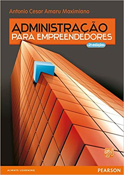
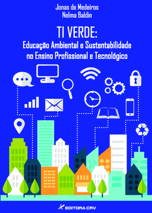
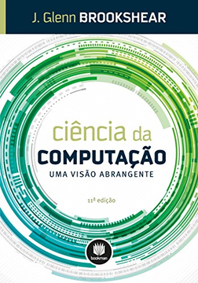
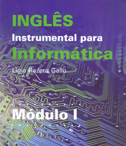
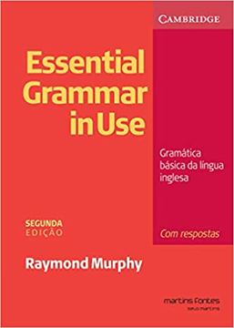
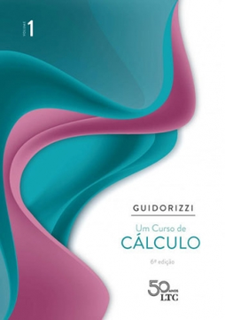

| ► Empreendedorismo em Negócios de TIC | |
|  | |
| Empreendedorismo: Transformando ideias em negócios | Administração para Empreendedores: Fundamentos da criação e da gestão de novos negócios |
| ► Ética e Responsabilidade Socioambiental | |
|  | |
| Ética e cidadania | TI VERDE: Educação ambiental e sustentabilidade no ensino profissional e tecnológico |
| ► Iniciação à Informática | |
|  |

|
| Ciência da Computação: Uma visão abrangente | Introdução à Computação: hardware, software e dados |
| ► Língua Inglesa Aplicada | |
|  |  |
| Inglês Instrumental para Informática | Essential Grammar in use: gramática básica da língua inglesa com respostas |
| ► Matemática Aplicada | |
|  | |
| Cálculo das Funções de uma Variável | Um Curso de Cálculo |